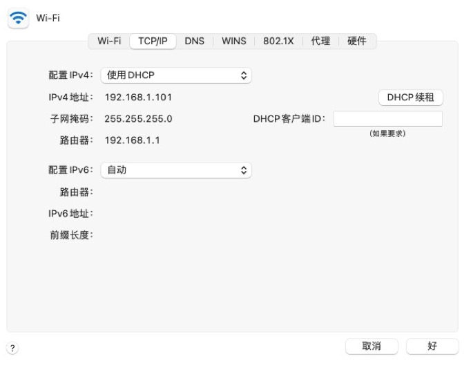

补充
DHCP¶
dhcp本质上是一个用于分配IP地址的套接字程序
四要素¶
想实现网络通信, 每台主机需具备的 四要素
○ 本机的IP地址
○ 子网掩码
○ 网关的IP地址
○ DNS的IP地址 (不是必须的,不用域名,直接用IP地址就行)
DNS -- 域名解析,将域名转换成对应的IP地址..
DNS的IP可以直接指定,也可以设置将DNS的IP地址设置成网关/路由器的IP地址.若是后者,在浏览器上输入域名后,浏览器会先将这个域名先送到网关,网关会帮忙向DNS服务器发起请求,把域名转成IP地址后再去通信.
敲黑板!!!☆浏览器规定用户输入的网址不敲端口,默认端口号是80 !! IP+端口 -- 联合唯一就行了呗.
获取方式¶
获取四要素的地址,有两种方式:
1> 手动配置 -- 静态获取 (可能会冲突 在设置前先ping一下,ping通了代表此IP被占用了)
2> dhcp -- 动态获取 "获取后不是不变的 是有租约时间的 过时会重新获取"

动态获取过程¶
每台主机都会默认安装一个dhcp client软件.每个路由器会默认安装dhcp server软件.
主机一开机,dhcp client软件就会默认启动 (当然,前提是主机有网络能往外通信)
dhcp报头格式: 以太网头 IP头 UDP头 DHCP数据包
1> 最前面的"以太网标头", 设置发出方(本机)的MAC地址和接收方(DHCP服务端)的MAC地址.
前者就是本机烧录在网卡上的MAC地址,后者这时不知道,就填入一个广播地址: FF-FF-FF-FF-FF-FF.
2> 后面的"IP标头",设置发出方的IP地址和接收方的IP地址. 本机对于这两者都不知道.
于是,发出方的IP地址就设为0.0.0.0, 接收方的IP地址设为255.255.255.255
3> 最后的"UDP标头",设置发出方的端口和接收方的端口. 这一部分是DHCP协议规定好的,
发出方是68端口, 接收方是67端口。
| MAC(本机) | FF-FF-FF-FF-FF-FF | 0.0.0.0 | 255.255.255.255 | 68 | 67 | DHCP数据包 |
|---|---|---|---|---|---|---|
这个数据包构造完成后, 就可以发出了.
以太网是广播的形式发送,同一个子网络的每台计算机都收到了这个包.
因为接收方的MAC地址是FF-FF-FF-FF-FF-FF, 看不出是发给谁的, 所以每台收到这个包的计算机, 还必须分析这个包的IP地址, 才能确定是不是发给自己的. 当看到发出方IP地址是0.0.0.0,接收方IP是255.255.255.255, 于是DHCP服务器知道"这个包是发给我的", 而其他计算机就可以丢弃这个包.
接下来,DHCP服务器读出这个包的数据内容,分配好IP地址,发送回去一个"DHCP响应"数据包.
这个响应包的结构也是类似的,以太网报头的MAC地址是双方的烧录在网卡上的地址,IP报头的IP地址是DHCP服务器的IP地址(发出方)和255.255.255.255(接收方), UDP标头的端口是67(发出方)和68(接收方),分配给请求端的IP地址和本网络的具体参数则包含在Data部分.
新加入的计算机收到这个响应包,于是就知道了自己的IP地址、子网掩码、网关地址、DNS服务器等等参数.
DNS¶
dns - domain name server 域名解析服务, 负责把域名解析成IP地址
参考文档:https://www.cnblogs.com/linhaifeng/articles/5937962.html#_label14
使用的阿里云服务器默认就有一个公网IP地址;申请域名;添加解析记录将域名跟IP地址关联到一起;最后进行备案.
全球一共有13台根服务器.13台是同步的. 底层是基于UDP协议的 ,每一次最大512bit,13已经是极限了.
13台没有一台在中国,So,国内有大量的缓存DNS服务器.Hhh.
DNS的解析流程

Ps: 一旦递归服务器拿到解析记录以后, 就会在本地进行缓存 , 如果下次客户端再请求本地的递归域名服务器相同域名的时候, 就不会再这样一层一层查了, 因为本地服务器里面已经有缓存了(达到了加速的效果)！要知道缓存是有TTL的生命周期的,需要定时更新.
DNS除了递归查找,还有迭代查找..略.
DNS的查找顺序
DNS的解析速度也是网速的一部分,所以为了加速其查询,引入了缓存!
浏览器DNS缓存->本地系统DNS缓存->本地计算机HOSTS文件->ISP DNS缓存->递归or迭代搜索
Ps: 缓存都是内存数据,HOSTS文件是硬盘数据.
计算机HOSTS文件路径:
linux - /etc/hosts
Windows - C:\Windows\System32\drivers\etc
eg: 在文件中添加 1.1.1.1 www.baidu.com
那么ping www.baidu.com显示的ip就是1.1.1.1
DNS的查找顺序是合理的,速度对比: 内存>硬盘>网络IO延迟
windows上查看所有的IP配置信息: ipconfig -all
查看windows操作系统DNS的缓存: ipconfig /displaydns
清除windows操作系统上的DNS缓存: ipconfig /flushdns
清除浏览器的dns缓存,在相应浏览器里输入:
谷歌 -- chrome://net-internals/#dns 点击clear host cache
网络拓扑图¶
假设有两间大教室,教室1处于网段172.168.1.0,教室2处于网段192.169.13.0; 教室1中的主机A要访问阿里巴巴的服务器...访问的是阿里巴巴服务器的公网IP,再映射成私有IP.
Ps1: 两间教室不需要2个路由,共用同一个路由器就行,因为一个路由可以帮忙转发多个网段..(不同的网段存在于一个路由表中)
Ps2: 注意哦!默认情况下,局域网的主机不会暴露在公网当中..里面的主机只有访问别个的命.想要逆天改命让别个访问它,得有个公网IP..